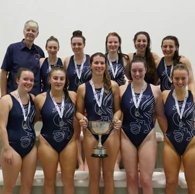

Last weekend was a good weekend for the City of Liverpool water polo team, for the third consecutive year we became the British Water Polo League champions. Coming into the final weekend, we were by no means the favourites to take the title, infact our fate was not totally in our hands. Along the way we had drawn and lost a couple of matches and I'm not sure any of us were sure we would be walking away champions on Sunday afternoon. So what is the secret to winning?
Honestly, I don't know the secret behind winning. However, I do know one thing and that's how not to win. I have had my fair share of sporting failures. Out of the nine official senior caps I achieved while playing for the GB Women's Water polo team, I was on the winning team once. I was not selected as part of the squad of 20 that trained towards the London Olympics. As a junior water polo player, I got selected for one of three European age group competitions. As an individual swimmer, I achived one national age group qualifying time in my 5 years of training with the City of Birmingham for 20+ hours a week.
I've painted a pretty bleak picture here, but the point I'm trying to make is that winning has only ever been a samll part of my journey to the person I am today. At the time, I know many of these failures felt like the end of the world, I have never been a very good loser and still feel the pain of missing the final penalty in the semi-final of the under 14 national championships. However, there will be many more situations where failure will be a real possibility, but now I know it is just part of the journey and will be an opportunity to learn and grow. Looking back, I know that without those near misses in tight competitive matches I would never have been able to stay composed during the title game against Manchester on Sunday.
Writing this post has made me consider those times in my life where I have failed. All of the experiences that came to mind are my sporting failures. By no stretch of the imagination have I ever been the perfect student; at school, as an undergraduate or now during my PhD. But as I think back over all the thousands of exams I have taken, projects handed in, assignments, I can't recall an end of the world failure. Don't get me wrong, I've had disasterous exams, projects left to the last minute, assignments that have totally missed the point. But I have always believed that I did the best I could under the situation. I gave myself a break. This is a topic for another time, but why does the student in me get a break where as the athlete accepts nothing less than perfection?
If you were reading this blog post in hope of some inspiration, I apologise. The only secret I have is that behind every win are the many failures that came before it. Here are some Michael Jordan quotes, which never fail to inspire to make up for lack of a big reveal. I knew all those sporting references would come in useful one day.
"I've missed more than 9000 shots in my career. I've lost almost 300 games. 26 times, I've been trusted to take the game winning shot and missed. I've failed over and over and over again in my life. And that is why I succeed."
"I can accept failure, everyone fails at something. But I can't accept not trying."
"Talent wins games, but teamwork and intelligence wins championships."